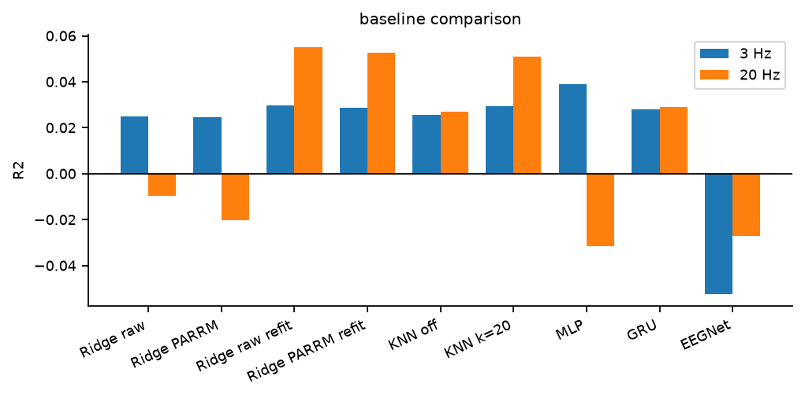
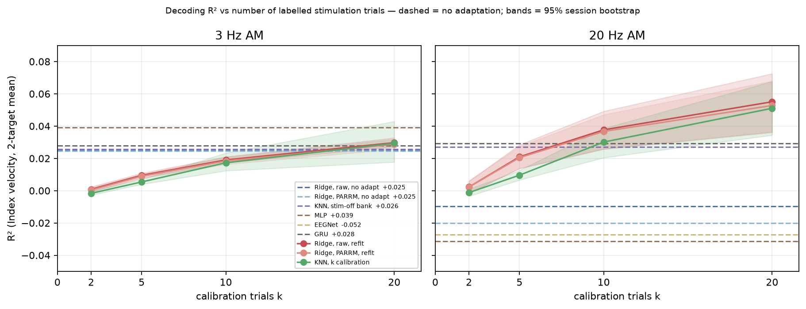
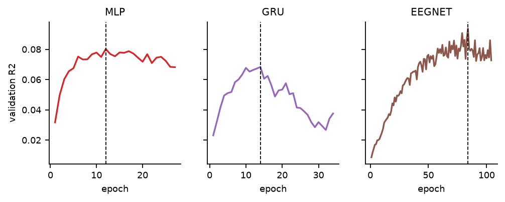
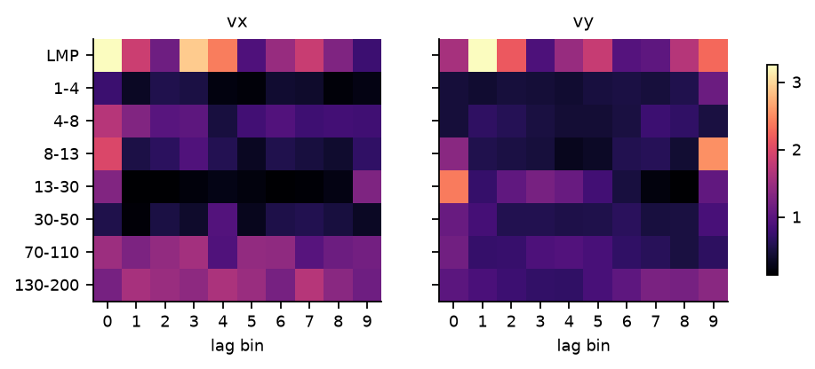
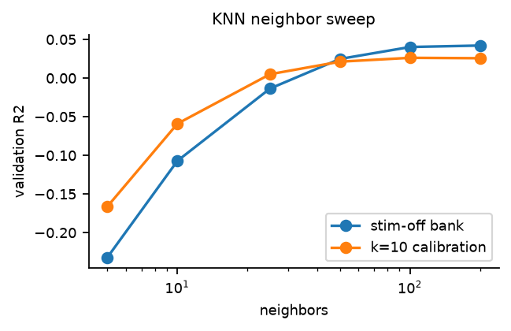
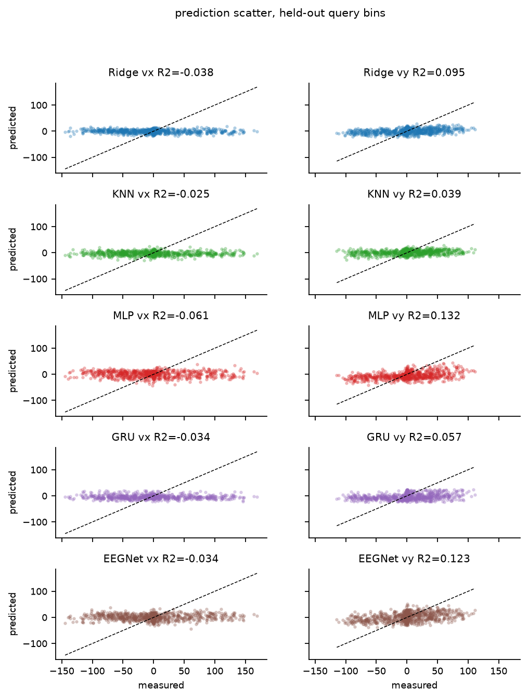
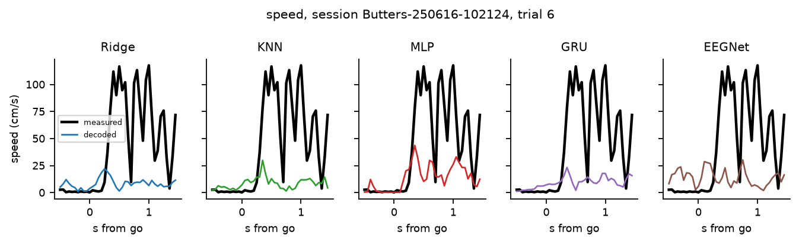
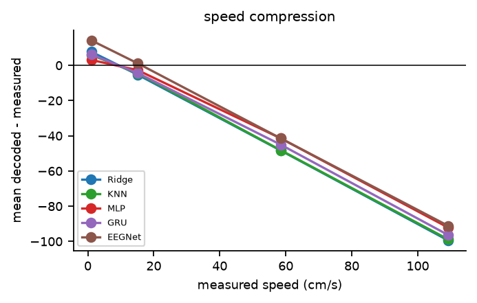
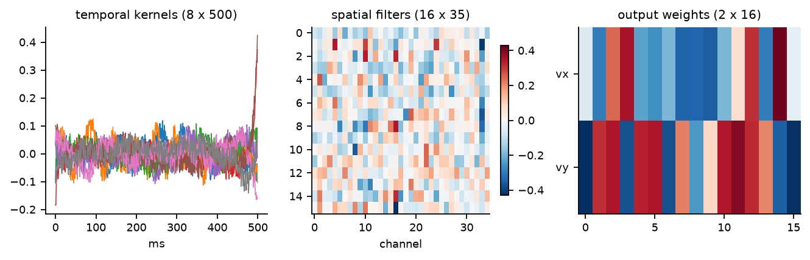
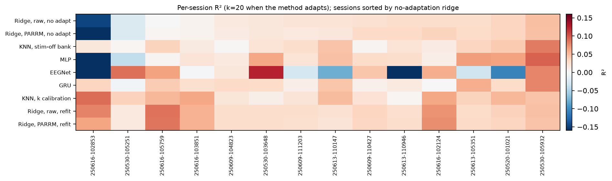
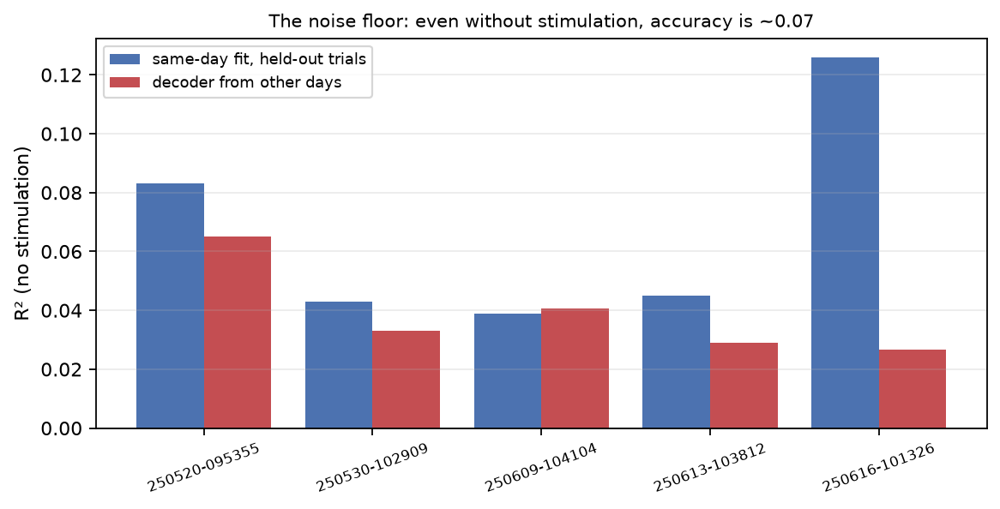
DATA train: 14 stimulation-off sessions validation: 3 stimulation-off sessions test: 14 stimulation-on sessions query: 30 trials, blocks 3-5 calibration: 20 trials, blocks 1-2 k: 2 5 10 20, 10 nested draws targets: Index_vx_cm, Index_vy_cm, 50 ms bins features: 35 channels x 8 features x 10 lag bins = 2800 normalize: median / MAD on train or calibration pool RIDGE alphas: 1e2 1e3 1e4 1e5 1e6 1e7 fit: (X^T X + alpha I) W = X^T Y conditions: raw / PARRM x no adaptation / refit on k ON trials KNN pca: 48 components neighbors: 5 10 25 50 100 200 bank: stimulation-off training windows in-context: k calibration trials as the entire model MLP layers: 2800 -> 32 -> 16 -> 2 dropout: 0.3 optimizer: AdamW, lr 1e-3, weight decay 1e-2 batch: 256 epochs: 150, patience 15 GRU layers: 280 input -> 128 hidden -> 2 optimizer: AdamW, lr 1e-3, weight decay 1e-4 batch: 16 epochs: 150, patience 20 EEGNET input: 35 channels x 2000 samples filters: 8 temporal, 16 spatial, 16 separable kernels: 500 ms, 62 ms pools: 2, 25 dropout: 0.25 optimizer: AdamW, lr 1e-3, weight decay 1e-2 batch: 16 epochs: 150, patience 20 EVALUATION metric: R2 per target on 30 query trials ceiling: same-day stimulation-off session interval: 95% bootstrap over sessions